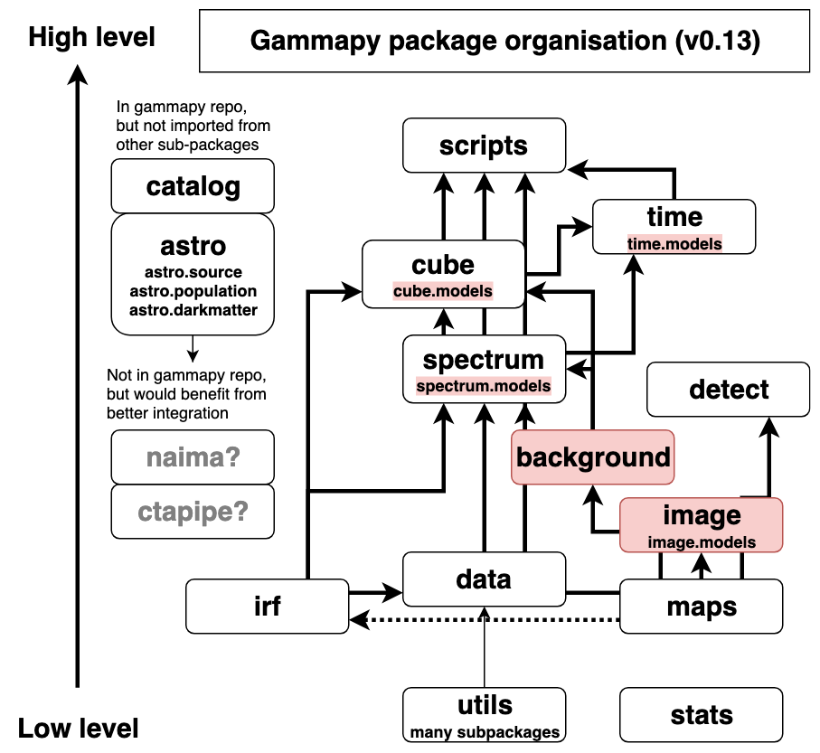
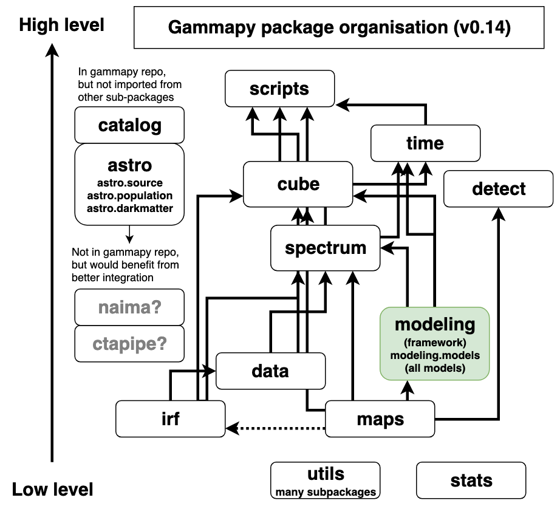

PIG 16 - Gammapy package structure#
Author: Christoph Deil, Axel Donath, Régis Terrier
Created: Jul 5, 2019
Accepted: Aug 18, 2019
Status: accepted
Discussion: GH 2274
Abstract#
Gammapy is currently (as of v0.13 in July 2019) structured into 14 sub-packages. Six of those are further structured into sub-sub-packages: utils, spectrum, image, cube, astro, time. Here we show the structure of the Gammapy package and consider possible changes to improve it.
For Gammapy v0.14 in September 2019 (and same for v1.0), we propose the following changes:
move gammapy.utils.fitting to gammapy.modeling, and to move all models from spectrum, image, cube and time to gammapy.modeling.models
dissolve gammapy.background, moving its code into gammapy.spectrum and gammapy.cube
dissolve gammapy.image, moving the useful functionality to gammapy.maps and gammapy.cube.
Clean up gammapy.utils sub-packages
After Gammapy v1.0, we propose to continue discussion on other changes considered while writing this PIG, described in the outlook section.
Status#
The current Gammapy package structure (as of v0.13):
This illustrates the namespaces where the Gammapy API is exposed. The number of Python files is much larger (about 100) and not important for the end-user API.
Proposal#
We propose to introduce gammapy.modeling and gammapy.modeling.models, to dissolve gammapy.background and gammapy.image in the v0.14 development cycle, resulting in the following package structure for Gammapy v0.14 and v1.0:
The following sections explain and motivate the proposed changes.
Introduce gammapy.modeling#
Currently our fitting and modeling framework is in gammapy.utils.fitting, and the built-in models in Gammapy are distributed like this:
gammapy.modeling.models – 1D spectral models
gammapy.image.models – 2D spatial models
gammapy.cube.models – 3D cube models
gammapy.time.models – 1D time models
Our proposal is to create a new sub-package gammapy.modeling and gammapy.modeling.models following the organisation chosen for models in Astropy and restructure code like this:
gammapy/utils/fitting -> gammapy/modeling/fitting
gammapy/utils/serialisation -> gammapy/modeling/serialisation
gammapy/spectrum/models – gammapy/modeling/models/spectrum
gammapy/image/models – gammapy/modeling/models/image
gammapy/cube/models – gammapy/modeling/models/cube
gammapy/time/models – gammapy/modeling/models/time
Since it is very inconvenient for users to have to type sub-sub-sub-package names, we propose to expose the end-user API direction in gammapy.modeling for general classes (Parameter, Parameters, Model, Fit, Dataset). For the models, we propose to expose them in gammapy.modeling.models (same as Astropy), and to introduce a factory function to make it easy to make models that is easy to import and use. E.g. it could be gammapy.modeling.make_model and take a model specification string or dictionary. Developing the syntax and schema for this “model specification language” isn’t in scope for this PIG. It will be done as part of the effort on model serialisation in Gammapy in the coming months.
We propose to add “Source” to all (currently 3D) source models, and to add “Spectral”, “Spatial” and “Time” for the spectral, spatial and time models. This avoids user confusion concerning the type of model, which currently exists in v0.13, because for some models (Gaussian, diffuse, table, constant) it isn’t obvious what kind they are. The drawback is that this generates very long class names, such as e.g. SpectralExponentialCutoffPowerLaw3FGL.
The motivation for this change is weak, but in discussions at the Erlangen coding sprint most Gammapy developers preferred it. The reasoning was that it’s a bit easier to find and maintain models if they are all in one place.
There was a concern that this might introduce circular dependencies between gammapy.modeling.models and e.g. gammapy.spectrum, gammapy.image, gammapy.cube or gammapy.time. But in GH 2290 it was shown that this is not the case, the proposed change works well.
There is still the open question whether models will keep this simple interface, or if we will add an evaluation caching layer, or whether eventually reduced IRFs will become models. So it is very much possible that there will be other changes concerning the Gammapy package structure in the future.
Dissolve gammapy.background#
We propose to dissolve gammapy.background, and move the code like this:
background_estimate.py, reflected.py, phase.py -> gammapy/spectrum
ring.py -> gammapy/cube/background_ring.py
The motivation for this change is that currently map-related background estimation code is split into gammapy/background and gammapy/cube without a clear separation what goes where. So the choice was either to move everything to dissolve gammapy.background or to move all background-related code to gammapy.background.
Looking at the package structure illustration above, it’s clear that gammapy.background is problematic, because it is lower level than gammapy.spectrum and gammapy.maps, so moving background estimation classes from gammapy.cube down to gammapy.background would likely lead to circular dependencies, because they rely on the map dataset class in gammapy.cube.
The reflected region background code is not a great fit in gammapy/spectrum or anywhere in Gammapy except for gammapy.background, but moving it there does make sense if we say that all 1D spectrum code goes in gammapy.spectrum and all map-related analysis code goes in gammapy.cube. Scalar background statistics, i.e. for a given region and energy band, can be created via methods on the 1D and 3D dataset classes.
Dissolve gammapy.image#
The gammapy.image package was introduced early and contained a SkyImage class for 2D sky images, and 2D image models, and some image analysis helper functions such as code to make a radial profile from an image. Much later gammapy.maps was introduced and we managed to support 2D and 3D maps with one container instead of separate gammapy.image.SkyImage and gammapy.cube.SkyCube.
Now, if we move gammapy.image.models to gammapy.modeling as proposed above, and that SkyImage has been removed in 2018, there is very little functionality left in gammapy.image, and it’s not clear what its scope is.
So we propose to clean this up, roughly like this:
utils.py -> one helper function, move to gammapy/maps/utils.py
asmooth.py -> move to gammapy.detect
measure.py and profile.py -> move to gammapy.maps (and clean up)
plotting.py -> move to gammapy/maps/plotting.py (remove illustrate_colormap and grayify_colormap)
Clean up gammapy.utils#
Above we propose to move gammapy.utils.fitting, the biggest piece of gammapy.utils to gammapy.modeling. We still need and want to keep gammapy.utils, as a lowest level layer in Gammapy where we write adapters and helpers for functionality e.g. from Numpy and Astropy. Mostly this is for usage within Gammapy, users very rarely need to import from gammapy.utils. Currently only energy_logspace, sqrt_space, sample_powerlaw and SphericalCircleSkyRegion are used from end-user documentation, i.e. very little.
We propose to clean up gammapy.utils, e.g. gammapy/utils/coordinates.py still contains coordinate helper functions that were added before astropy.coordinates existed. We do not detail the cleanup here, this will be discussed on a case-by-case basis. After that we will review what is left and decide which parts do mention in the public API docs and which to keep as purely internal code.
Outlook#
During discussion of this PIG, several other ideas surfaced and were considered. The following ideas could be considered and evaluated for feasibility (as done in GH 2290 for gammapy.modeling) in the future.
Generalising maps to allow maps without a WCS and spatial axes, and / or using it everywhere in Gammapy (for IRFs, spectra, lightcurves) could be nice. Possibly ALMA does this, all their data is in 4D containers with lon, lat, wavelength, time, and e.g. a 1D spectrum would have only one bin in lon, lat, time. It’s not clear if and what changes this would imply for the Gammapy package structure.
CTA IRFs and other CTA data level 3 classes might be maintained in ctapipe or somehow shared between Gammapy and ctapipe.
gammapy.spectrum will likely become higher level than gammapy.cube, i.e. 1D spectral analysis will be based on 3D maps analysis more.
gammapy.detect will likely grow map analysis and modeling based algorithms, i.e. depend on gammapy.cube and the rest of the Gammapy package
gammapy.astro could grow (merge in Naima) or be split out from Gammapy.
gammapy.cube could be renamed to gammapy.map_analysis. gammapy.scripts could be renamed to gammapy.analysis. Or similar changes to better names could be made, depending on how the purpose and scope change of sub-packages changes.
Datasets could be grouped in gammapy.datasets, if they are simple container objects (like models) that aren’t tightly coupled with analysis code in gammapy.spectrum and gammapy.maps.
Decision#
The PIG was extensively discussed at the Gammapy coding sprint in July 2019 and in GH 2274. A final review announced on the Gammapy and CC mailing list did not yield any additional comments. Therefore the PIG was accepted on August 18, 2019.